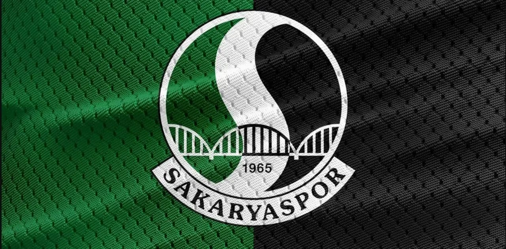
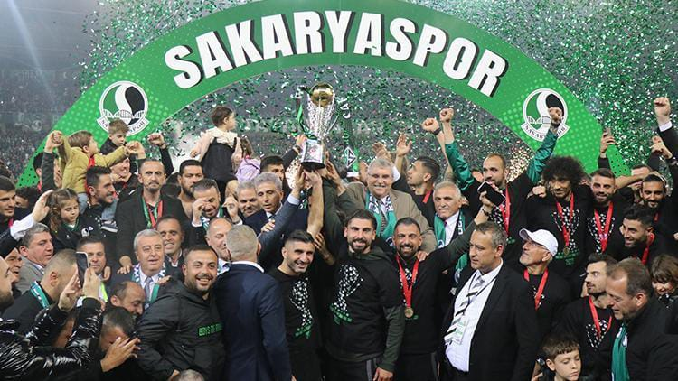

Sakaryaspor:
Sakaryaspor, Sakarya'da bulunan ve 1. Lig'de mücadele
eden futbol kulübü. Adını şehre ismini veren Sakarya
Nehri'nden almıştır

Kuruluşu ve ilk yılları:
17 Haziran 1965 tarihinde il merkezi Adapazarı'nda; İdman Yurdu, Ada
Gençlik, Gençler Birliği, Güneşspor kulüplerinin birleşmesi ile
Sakarya ilini, aynı yıl kurulan Türkiye 2. Futbol Ligi'nde temsil
etmek amacıyla kurulmuştur. İlk amblemi "futbol topu üzerinde iki adet
S harfleri ve 1965" dir. 1987 yılında dönemin kulüp başkanı Erkal
Etçioğlu tarafından tasarımı yaptırılan ve hâlen kullanılan amblemi
ise "Sakarya Nehri'nin S harfini andırarak kıvrılarak Sakarya
Köprüsü'nün altından akması ve iki yakayı yeşil ve siyah renklerle
boyaması" figürüdür. İlk başkanı Ethem Boran, ilk teknik direktörü ve
aynı zamanda takımın kalecisi ve kaptanı, kulübün kuruluşunda da
önemli pay sahibi olan Fikret Aldinç'tir. Sakaryaspor kendi
sahasındaki ilk resmî lig maçını 1965-66 sezonunda Mersin İdman Yurdu
ile oynamış, maçın son dakikalarında teknik direktör/kaleci Fikret
Aldinç'in penaltı golü ile 1-0'lık skorla sahasındaki ilk resmî golünü
atmış, tarihindeki ilk resmî galibiyetini almıştır.
80'li yıllar ve 1. Lige İlk Yükseliş:
1973-74 sezonunda 1. Lig'e çok yaklaşan ama Trabzonspor'a geçilen
Sakaryaspor, 1980-81 sezonunda 2. Lig A Grubu şampiyonu olarak 1.
Lig'e çıkmıştır. 1. Lig'de en iyi derecesini 1981-82 sezonunda 5.
olarak yapan Sakaryaspor aynı sezon, Fenerbahçe'yi deplasmanda 1-0,
Galatasaray'ı deplasmanda 2-0 geçmiş, Beşiktaş'la ise İstanbul'da
1-1 berabere kalmıştır. 1985-86 sezonunda sondan 3. olarak 2. Lig'e
düşmüştür. Ancak ertesi sezon 2. Lig C Grubu'nda Konyaspor'u
averajla geçerek yeniden 1. Lig'e dönmüştür.
